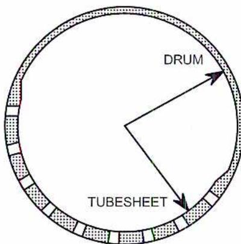
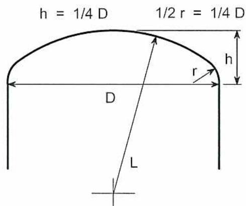
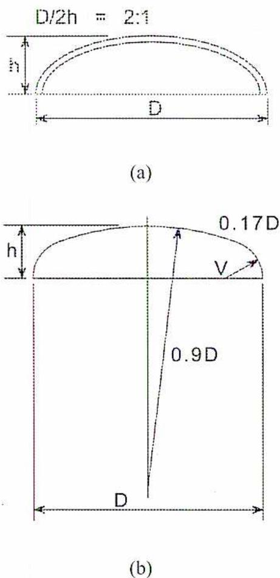
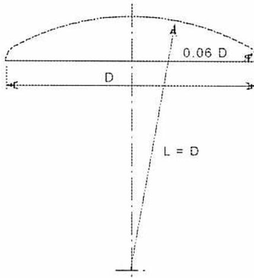
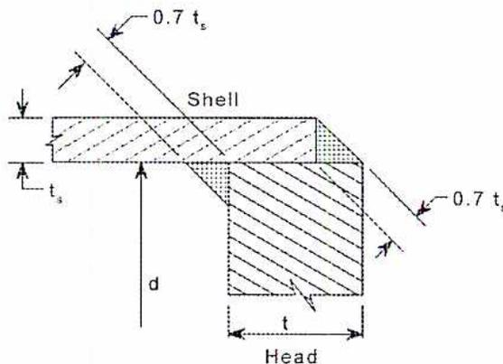
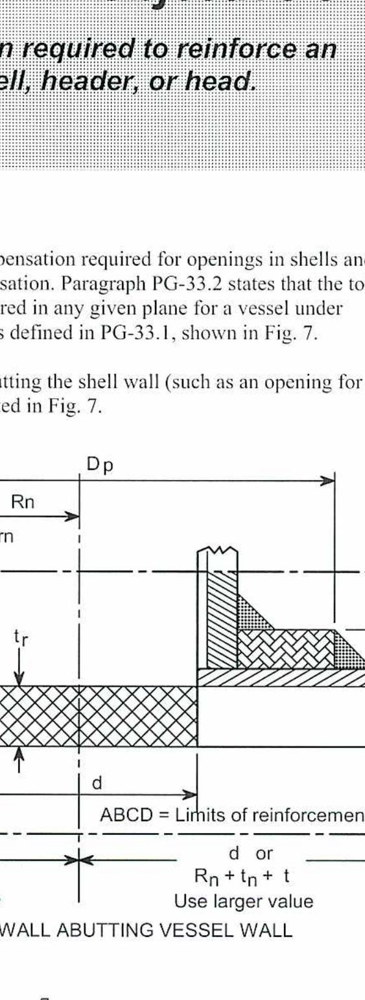

| Chapter | Page |
|---|---|
| 1. A.S.M.E. Code Calculations - Cylindrical Components | 1 |
| 2. A.S.M.E. Code Calculations - Stayed Surfaces, Safety Valves, Furnaces | 51 |
| 3. Boiler and Pressure Vessel Legislation | 77 |
| 4. Plant Design and Installation | 113 |
| 5. Management and Supervision | 137 |
| 6. Plant Maintenance | 175 |
| 7. Safety | 219 |
| 8. Linear Motion | 257 |
| 9. Angular Motion | 287 |
| 10. Friction | 323 |
| 11. Static and Dynamic Forces | 351 |
| 12. Fluid Mechanics | 405 |
| End of Chapter Question Solutions | 445 |
When you complete this learning material, you will be able to:
Apply the appropriate formulae from ASME Sections I and VIII to calculations involving cylindrical components, openings, and compensations in boilers and pressure vessels.
You will specifically be able to complete the following tasks:
As power engineers acquire their second and first class power engineering certification, they find that their roles and areas of responsibility require them to have a more detailed working knowledge of the key engineering codes and standards with which their facility must comply. Power engineers often work on teams or lead teams that are responsible for upgrades within their facilities and/or for making changes to major pressure piping or equipment. Although power engineers are not required to design a boiler or pressure vessel, they often work as team members for equipment design, upgrade, process change, commissioning, operation, or repair. These activities require work to be done in accordance with applicable codes. As well, when you become chief engineer of a facility, you may be called upon to lead teams and give approval for various projects that must comply with specific engineering codes and standards.
In the early 1900's, the American Society of Mechanical Engineers (ASME) appointed various committees to draw up standards for the construction of boilers and pressure vessels together with standards for welding and guidelines for the care of boilers in service. These standards and guidelines have been improved over the years with the improvement in materials and technology.
One important component of the standards for pressure vessels is the use of a safety factor . The measured physical properties of a material, including ultimate tensile strength, are divided by a defined safety factor to derive the maximum allowable stress. In this way, allowance is made for limitations in the testing technology, unusual stress concentrations, non-uniform materials, and material flaws. Technological improvements, especially in materials testing, have reduced the safety factor from its original value of 5. ASME Section I (2001) rules are based on a safety factor of 4. The safety factor will be reduced to 3.5 in future editions of Section I; this is the same factor used in Sections VIII-1 and VIII-2.
Pressures calculated or given in this module refer to gauge pressure unless otherwise indicated.
Consult the latest ASME Codes—Section I and Section VIII, Division 1—while studying this module. Figures referenced with a Code section prefix, such as “Fig. PG-32” or “Fig. UG-34,” can be found in the ASME Codes and are generally not reproduced here.
Note: Material and formulae used in this module refer to the 2001 edition of the ASME Codes.
Note: Correct units of measure are very important to accurate calculations, and students should be well versed in their use. However, due to the size and complexity of Code calculations, it is common practice to omit the units until the final answer is derived. This convention has been used throughout this module.
Paragraphs PG-1, PG-2: This Code covers rules for construction of power boilers, electric boilers, miniature boilers, and high temperature water boilers. The scope of jurisdiction of Section I applies to the boiler proper and the boiler external piping. Superheaters, economizers, and other pressure parts connected directly to the boiler, without intervening valves, are considered to be parts of the boiler proper and their construction shall conform to Section I rules.
Paragraph PG-6 states that steel plates for any part of a boiler subject to pressure, whether or not exposed to the fire or products of combustion, shall be in accordance with specifications listed in paragraph PG-6.1. Paragraph PG-9 states that pipes, tubes, and pressure containing parts used in boilers shall conform to one of the specifications listed in paragraph PG-9.1.
Paragraph PG-16.3 states that the minimum thickness of any boiler plate under pressure shall be 6.4 mm. The minimum thickness of plates to which stays may be attached (in other than cylindrical outer shell plates) shall be 8 mm. When pipe over 127 mm O.D. is used in lieu of plate for the shell of cylindrical components under pressure, its minimum wall thickness shall be 6.4 mm.
Paragraph PG-16.4 states that plate material not more than 0.25 mm thinner than the required thickness calculated by Code formula may be used provided the manufacturing process is such that the plate will not be more than 0.25 mm thinner than that specified in the order.
Paragraph PG-16.5 states that pipe or tube material shall not be ordered thinner than the required thickness calculated by Code formula. Also, the ordered thickness shall include provisions for manufacturing tolerance.
Paragraph PG-21 states that the term maximum allowable working pressure (MAWP) refers to gauge pressure, except when noted otherwise in the calculation formula of PG-27.2.
The formulae in this section are used to determine the minimum required thickness of piping, tubes, drums, and headers, when the maximum allowable working pressure is known. These formulae can be transposed to determine the maximum allowable working pressure if the minimum required thickness is given.
The symbols used in the formulae are found in paragraph PG-27.3 and are defined as follows:
| \( t \) | = | minimum required thickness (mm) (see PG-27.4, note 7) |
| \( P \) | = | maximum allowable working pressure (MPa). (see PG-21, refers to gauge pressure) |
| \( D \) | = | outside diameter of cylinder (mm) |
| \( R \) | = | inside radius of cylinder (mm) |
| \( E \) | = | efficiency of longitudinal welded joints or of ligaments between openings, whichever is lower (the values allowed for \( E \) are listed in PG-27.4, note 1) |
| \( S \) | = | maximum allowable stress value at the operating temperature of the metal (Table 1 or Section II, Part D, Table A1. See PG-27.4, note 2) |
| \( C \) | = | minimum allowance for threading and structural stability (mm) (see PG-27.4, note 3) |
| \( e \) | = | thickness factor for expanded tube ends (mm) (see PG-27.4, note 4) |
| \( Y \) | = | temperature coefficient (see PG-27.4, note 6) |
The Boiler and Pressure Vessel Committee established rules for new construction of pressure vessels that ensure safe and reliable performance. The Code is not a handbook and cannot replace education, experience, and the use of good engineering judgement. This can be seen in that Section VIII-1 applies to small compressed-air receivers sold commercially to the general public as well as to very large pressure vessels used by the petrochemical industry. The Code contains mandatory requirements, specific prohibitions, and non-mandatory guidance for pressure vessel construction activities.
Paragraph UG-4 states that materials subject to stress due to pressure are to conform to the specifications given in Section II, except as otherwise permitted in paragraphs UG-9, UG-10, UG-11, UG-15 and the mandatory Appendices. Paragraph UG-23 (a) lists the tables in Section II, D for various materials.
ASME Boiler Code Section I, as well as Section VIII, Division 2 (VIII-2), requires all major longitudinal and circumferential butt joints to be examined by full radiograph. Section VIII-1 lists various levels of examination for these major joints. A fully radiographed major longitudinal butt-welded joint in a cylindrical shell would have a joint efficiency factor ( \( E \) ) of 1.0. This factor corresponds to a safety factor (or material quality factor) of 3.5 in the parent metal. Non-radiographed longitudinal butt-welded joints have a joint efficiency factor ( \( E \) ) of 0.7, which corresponds to a safety factor of 0.5 in plates. This results in an increase of 43% in the thickness of the plates required.
With pressure vessels, the maximum temperature used in the design is important, as is the minimum temperature.
The minimum temperature used in design shall be the lowest temperature that the vessel will experience from any factor, including normal operation, upset condition, or environmental conditions.
The formulae in this section are used to determine the minimum required thickness of shells when the maximum allowable working pressure is known. These formulae can be transposed to determine the maximum allowable working pressure if the minimum required thickness is given.
The symbols used in the formulae are found in paragraph UG-27 (b) and are defined as follows:
| \( t \) | = | minimum required thickness (mm) |
| \( P \) | = | internal design pressure (MPa) (see UG-21. refers to gauge pressure) |
| \( D \) | = | outside diameter of cylinder (mm) |
| \( R \) | = | inside radius of shell course under consideration (mm) |
| \( E \) | = |
joint efficiency for, or the efficiency of, appropriate joint in cylindrical or spherical shells, or the efficiency of ligaments between openings, whichever is less
(use UW-12 for welded vessels. Use UW-53 for ligaments between openings) |
| \( S \) | = | maximum allowable stress value (see UG-23 and the stress limitations specified in UG-24) |
Calculate the required minimum thickness or the maximum allowable working pressure of piping, tubes, drums and headers of ferrous tubing up to and including 127 mm O.D.
The following formulae are found in ASME Section I, paragraph PG-27.2.1.
Formula for minimum required thickness
$$ t = \frac{PD}{2S + P} + 0.005D + e \quad 1.1 $$
Formula for MAWP
$$ P = S \left[ \frac{2t - 0.01D - 2e}{D - (t - 0.005D - e)} \right] \quad 1.2 $$
Calculate the minimum required wall thickness of a watertube boiler tube 70 mm O.D. that is strength welded into place in a boiler. The tube is located in the furnace area of the boiler and has an average wall temperature of 350°C. The maximum allowable working pressure is 4000 kPa gauge. The tube material is carbon steel SA-192.
Note: Check PG-6 for plate materials and PG-9 for boiler tube materials before starting calculations; the information will direct you to the correct stress table in ASME Section II, Part D by indicating if the metal is carbon steel or an alloy steel.
For tubing up to and including 127 mm O.D. use equation 1.1.
(See paragraph PG-27.2.1 (2001.))
$$ t = \frac{PD}{2S + P} + 0.005D + e $$
Where
$$ P = 4000 \text{ kPa} = 4.0 \text{ MPa} $$
$$ D = 70 \text{ mm} $$
$$ e = 0 \text{ (see PG-27.4, note 4, strength welded)} $$
$$ S = 88.3 \text{ MPa (see Table 1 or Section II, Part D, Table A1, SA-192 at } 350^\circ\text{C)} $$
$$ \begin{aligned} t &= \frac{4 \times 70}{2(88.3) + 4} + 0.005(70) + 0 \\ &= \frac{280}{180.6} + 0.35 \\ &= 1.55 + 0.35 \\ &= \mathbf{1.9 \text{ mm (Ans.)}} \end{aligned} $$
Note: This value is exclusive of the manufacturer's tolerance allowance (see PG-16.5). The manufacturing process does not produce absolutely uniform wall thickness; add an allowance of approximately 12.5% to the minimum thickness calculated.
The formula for minimum thickness may be transposed to solve for the maximum allowable working pressure if the tube size and thickness are known.
Calculate the maximum allowable working pressure, in kPa, for a 75 mm O.D. and 4.75 mm minimum thickness superheater tube connected to a header by strength welding. The average tube temperature is \( 400^\circ\text{C} \) . The tube material is SA-213-T11.
Note: Check PG-9 for boiler tube materials before starting calculations; the information will direct you to the correct stress table in ASME Section II, Part D. SA-213-T11 is alloy steel.
For tubing up to and including 127 mm O.D. Use equation 1.2.
(See paragraph PG-27.2.1.)
$$ P = S \left[ \frac{2t - 0.01D - 2e}{D - (t - 0.005D - e)} \right] $$
Where
$$ t = 4.75 \text{ mm} $$
$$ D = 75 \text{ mm} $$
$$ e = 0 \text{ (see PG-27.4, note 4, strength welded.)} $$
$$ S = 102 \text{ MPa (Table 1 or Section II, Part D, Table A1, SA-213-T11 at } 400^\circ\text{C)} $$
$$ \begin{aligned} P &= 102 \times \left[ \frac{(2 \times 4.75) - (0.01 \times 75) - (2 \times 0)}{75 - (4.75 - (0.005 \times 75) - 0)} \right] \\ &= 102 \times \left[ \frac{9.5 - 0.75}{75 - (4.75 - 0.375)} \right] \\ &= 102 \times \frac{8.75}{70.625} \\ &= 12.64 \text{ MPa} = \mathbf{12\,640\ kPa\ (Ans.)} \end{aligned} $$
The tubes were strength welded in Example 1 and Example 2. For calculations involving tubes expanded into place, the appropriate value of \( e \) is found in paragraph PG-27.4, note 4.
The following formulae (found in ASME Section VIII-1, paragraph UG-27(c) 2001) are used for calculating wall thickness and design pressure. Paragraph UG-31(a) states that these calculations are used for tubes and pipes under internal pressure.
(1) Circumferential stress (longitudinal joints)
$$ t = \frac{PR}{(SE - 0.6P)} \qquad 1.3 $$
Or
$$ P = \frac{SEt}{(R + 0.6t)} \qquad 1.4 $$
When \( t < 0.5R \) or \( P < 0.385SE \)
(2) Longitudinal stress (circumferential joints)
$$ t = \frac{PR}{(2SE - 0.4P)} \qquad 1.5 $$
Or
$$ P = \frac{2SEt}{(R + 0.4t)} \qquad 1.6 $$
When \( t < 0.5 R \) or \( P < 1.25SE \)
As internal pressures increase higher than 20.6 MPa, special considerations must be given to the construction of the vessel as specified in paragraph U-1 (d). As the ratio of \( t/R \) increases beyond 0.5, a more accurate equation is required to determine the thickness. The formulae for thick walled vessels are listed in Appendix 1, Supplementary Design Formulas 1.1 to 1.3.
$$ SE = \frac{P(R_0^2 + R^2)}{(R_0^2 - R^2)} $$
Where \( R_0 \) and \( R \) are outside and inside radii, respectively. By substituting \( R_0 = R + t \)
$$ t = R \left( Z^{\frac{1}{2}} - 1 \right) \quad \text{Where} \quad Z = \frac{(SE + P)}{(SE - P)} \quad 1.7 $$
Where \( t > 0.5 R \) or \( P > 0.385SE \)
And
$$ P = SE \left[ \frac{(Z - 1)}{(Z + 1)} \right] \quad \text{Where} \quad Z = \left[ \frac{(R + t)}{R} \right]^2 \quad 1.8 $$
For longitudinal stress with \( t > 0.5R \) or \( P > 1.25SE \)
$$ t = R \left( Z^{\frac{1}{2}} - 1 \right) \quad \text{Where} \quad Z = \left( \frac{P}{SE} \right) + 1 \quad 1.9 $$
And
$$ P = SE(Z - 1) \quad \text{Where} \quad Z = \left[ \frac{(R + t)}{R} \right]^2 \quad 1.10 $$
Note: Formulae 1.3 to 1.10 are for internal pressure only.
A vertical boiler is constructed of SA-515-60 material in accordance with the requirements of Section VIII-1. It has an inside diameter of 2440 mm and an internal design pressure of 690 kPa at 230°C. The corrosion allowance is 3 mm, and joint efficiency is 0.85. Calculate the required thickness of the shell if the allowable stress is 138 MPa.
The quantity \( 0.385SE = 45.16 \) MPa; since this is greater than the design pressure \( P = 690 \) kPa, use equation 1.3. (See Section VIII-1, UG-27.)
The inside radius in a corroded condition is \( 1220 + 3 \) mm = 1223 mm
$$ \begin{aligned} t &= \frac{PR}{(SE - 0.6P)} + \text{corrosion allowance} \\ &= \frac{0.69 \times 1223}{(138 \times 0.85) - 0.6(0.69)} + 3 \\ &= \frac{843.87}{116.886} + 3 \\ &= 7.22 + 3 \\ &= \mathbf{10.22 \text{ mm (Ans.)}} \end{aligned} $$
The calculated thickness is less than \( 0.5R \) ; therefore, equation 1.3 is acceptable.
Calculate the required shell thickness of an accumulator with \( P = 69 \) MPa, \( R = 45.7 \) cm, \( S = 138 \) MPa, and \( E = 1.0 \) . Assume a corrosion allowance of 6 mm.
The quantity \( 0.385SE = 53.13 \) MPa; since this is less than the design pressure \( P = 69 \) MPa, use equation 1.7.
$$ \begin{aligned} t &= R \left( Z^{\frac{1}{2}} - 1 \right) \quad \text{Where} \quad Z = \frac{SE + P}{SE - P} \\ Z &= \frac{(138 \times 1) + 69}{(138 \times 1) - 69} \\ &= \frac{207}{69} \\ &= 3 \\ t &= (457 + 6) \left( 3^{\frac{1}{2}} - 1 \right) \\ &= 463 \times 0.732 \\ &= 338.92 \text{ mm} \end{aligned} $$
Total including corrosion allowance
$$ \begin{aligned} t &= 338.92 + 6 \\ &= 344.92 \text{ mm (Ans.)} \end{aligned} $$
Calculate the required shell thickness of an accumulator with \( P = 52.75 \text{ MPa} \) , \( R = 45.7 \text{ cm} \) , \( S = 138 \text{ MPa} \) , and \( E = 1.0 \) . Assume corrosion allowance = 0.
The quantity \( 0.385SE = 53.13 \text{ MPa} \) ; since this is greater than the design pressure \( P = 52.75 \text{ MPa} \) , use equation 1.3.
$$ \begin{aligned} t &= \frac{PR}{SE - 0.6P} + \text{corrosion allowance} \\ &= \frac{52.75 \times 457}{(138 \times 1) - 0.6(52.75)} + 0 \\ &= \frac{24106.75}{106.35} \\ &= 226.67 \text{ mm (Ans.)} \end{aligned} $$
This example used equation 1.3; compare the answer using equation 1.7
$$ \begin{aligned} t &= R \left( Z^{\frac{1}{2}} - 1 \right) \quad \text{Where} \quad Z = \frac{SE + P}{SE - P} \\ Z &= \frac{(138 \times 1) + 52.75}{(138 \times 1) - 52.75} \\ &= \frac{190.75}{85.25} \\ &= 2.2375 \\ t &= 457 \left( 2.2375^{\frac{1}{2}} - 1 \right) \\ &= 457 \times 0.4958 \\ &= 226.59 \text{ mm (Ans.)} \end{aligned} $$
This shows that the 'simple to use' equation (1.3) is accurate over a wide range of \( R/t \) ratios.
Calculate the required minimum thickness or the maximum allowable working pressure of ferrous piping, drums, and headers.
In cylindrical vessels, the stress set up by the pressure on the longitudinal joints is equal to twice the stress on the circumferential joints.
The following formulae are found in ASME Section I, paragraph PG-27.2.2.
The information for piping, drums, or headers may be given with either the inside (R) or outside (D) measurement.
Using the outside diameter
$$ t = \frac{PD}{2SE + 2yP} + C \quad 2.1 $$
$$ P = \frac{2SE(t - C)}{D - (2y)(t - C)} \quad 2.2 $$
Using the inside radius
$$ t = \frac{PR}{SE - (1 - y)P} + C \quad 2.3 $$
$$ P = \frac{SE(t - C)}{R + (1 - y)(t - C)} \quad 2.4 $$
Calculate the required minimum thickness of seamless steam piping which carries steam at a pressure of 6200 kPa gauge and a temperature of 375°C. The piping is plain end, 273.1 mm O.D. (nominal pipe size of 10 inches) and the material is SA-335-P11. Allow a manufacturer's tolerance allowance of 12.5%.
Note: Check PG-6 and PG-9 for materials before starting calculations; the information will direct you to the correct stress table in ASME Section II, Part D. The material SA-335-P11 is alloy steel.
Note: Plain-end pipe does not have its wall thickness reduced when joining to another pipe. For example, lengths of pipe welded together, rather than being joined by threading, are classed as plain-end pipes.
Use equation 2.1 (See PG-27.2.2.)
$$ t = \frac{PD}{2SE + 2yP} + C $$
Where
$$ P = 6200 \text{ kPa} = 6.2 \text{ MPa} $$
$$ D = 273.1 \text{ mm} $$
$$ C = 0 \text{ (see PG-27.4, note 3, 4-inch nominal and larger)} $$
$$ S = 104.1 \text{ MPa (see Table 1 or Section II, Part D, Table A1, SA-335-P11 at } 375^\circ\text{C)} $$
$$ E = 1.0 \text{ (see PG-27.4, note 1, seamless pipe as per PG-9.1)} $$
$$ y = 0.4 \text{ (see PG-27.4, note 6, ferritic steel less than } 475^\circ\text{C)} $$
$$ \begin{aligned} t &= \frac{6.2 \times 273.1}{2(104.1 \times 1) + 2(0.4 \times 6.2)} + 0 \\ &= \frac{1693.22}{208.2 + 4.96} \\ &= \frac{1693.22}{213.16} \\ &= 7.943 \text{ mm} \end{aligned} $$
This value does not include a manufacturer's tolerance allowance of 12.5%.
Therefore
$$ 7.943 \times 1.125 = 8.936 \text{ mm (Ans.)} $$
Calculate the maximum allowable working pressure in kPa for a seamless steel pipe of material SA-209-T1. The nominal pipe size is 323.9 mm (12 in. pipe) with a wall thickness of 11.85 mm. The operating temperature is \( 450^\circ\text{C} \) . The pipe is plain ended. Assume that the material is austenitic steel.
Note: Check PG-6 and PG-9 for materials before starting calculations; the information will direct you to the correct stress table in ASME Section II, Part D. The material SA-209-T1 is alloy steel.
Use equation 2.2. (See PG-27.2.)
$$ P = \frac{2SE(t - C)}{D - (2y)(t - C)} $$
Where
$$ D = 323.9 \text{ mm (see } \textit{Handbook of Formulae and Physical Constants}, \text{ "Table of Actual Pipe Dimensions.")} $$
$$ t = 11.85 \text{ mm} $$
$$ C = 0 \text{ (see PG-27.4, note 3, 4-inch (102 mm) nominal and larger)} $$
$$ S = 100 \text{ MPa (Table 1 or Section II, Part D, Table A1, SA-209-T1 at } 450^\circ\text{C)} $$
$$ E = 1.0 \text{ (see PG-27.4, note 1, seamless pipe as per PG-9.1)} $$
$$ y = 0.4 \text{ (see PG-27.4, note 6, austenitic steel at } 500^\circ\text{C)} $$
$$ \begin{aligned} P &= \frac{2(100 \times 1) \times (11.85 - 0)}{323.9 - (2 \times 0.4) \times (11.85 - 0)} \\ &= \frac{200 \times 11.85}{323.9 - 9.48} \\ &= \frac{2370}{314.42} \\ &= 7.538 \text{ MPa} \\ &= 7538 \text{ kPa (Ans.)} \end{aligned} $$
A welded watertube boiler drum of SA-515-60 material is fabricated to an inside radius of 475 mm on the tubesheet and 500 mm on the drum. The plate thickness of the tubesheet and drum are 59.5 mm and 38 mm respectively. The longitudinal joint efficiency is 100%, and the ligament efficiencies are 56% horizontal and 30% circumferential. The operating temperature is not to exceed \( 300^\circ\text{C} \) . Determine the maximum allowable working pressure based on:

Figure 1
Welded Watertube Boiler Drum
Note: This is a common example of a watertube drum fabricated from two plates of different thickness. Greater material thickness is required where the boiler tubes enter the drum than is required for a plain drum. For economy, the drum is designed to meet the pressure requirements for each situation.
Note: Check PG-6 and PG-9 for materials before starting calculations; the information will direct you to the correct stress table in ASME Section II, Part D. The material SA-515-60 is carbon steel plate.
This example has two parts:
(a) Use equation 2.4 (inside radius \( R \) ). (See PG-27.2.2.)
$$ \text{Drum } P = \frac{SE(t - C)}{R + (1 - y)(t - C)} $$
Where
\( S = 113.1 \text{ MPa} \) (see Table 1 or Section II, Part D, Table A1, SA-515-60 at \( 300^\circ\text{C} \) )
\( E = 1 \) (see PG-27.4, note 1)
\( t = 38 \text{ mm} \)
\( C = 0 \) (see PG-27.4, note 3, 4-inch (102 mm) nominal and larger)
\( R = 500 \text{ mm} \) (for the drum)
\( y = 0.4 \) (see PG-27.4, note 6, ferritic steel less than \( 475^\circ\text{C} \) )
$$ \begin{aligned} \text{Drum } P &= \frac{(113.1 \times 1)(38 - 0)}{500 + (1 - 0.4)(38 - 0)} \\ &= \frac{4297.8}{500 + 22.8} \\ &= 8.22 \text{ MPa (Ans.)} \end{aligned} $$
Note: In cylindrical vessels, the stress set up by the pressure on the longitudinal joints is equal to twice the stress on the circumferential joints.
(b) Use equation 2.4 (inside radius \( R \) ). (See PG-27.2.2.)
$$ \text{Tubesheet } P = \frac{SE(t - C)}{R + (1 - y)(t - C)} $$
Where
$$ \begin{aligned} S &= 113.1 \text{ MPa (see Table 1 or Section II, Part D, Table A1, SA-515-60 at } 300^\circ\text{C)} \\ E &= 0.56 \text{ (circumferential stress} = 30\% \text{ and longitudinal stress} = 56\%; \text{ therefore, } 0.56 < 2 \times 0.30) \\ T &= 59.5 \text{ mm} \\ C &= 0 \text{ (see PG-27.4, note 3, 4-inch (102 mm) nominal and larger)} \\ R &= 475 \text{ mm (for the tubesheet)} \\ y &= 0.4 \text{ (see PG-27.4, note 6, ferritic steel less than } 475^\circ\text{C)} \end{aligned} $$
$$ \begin{aligned} \text{Tubesheet } P &= \frac{(113.1 \times 0.56)(59.5 - 0)}{475 + (1 - 0.4)(59.5 - 0)} \\ &= \frac{3768.49}{475 + 35.7} \\ &= 7.379 \text{ MPa (Ans.)} \end{aligned} $$
Note: The maximum allowable working pressure is based on the lowest number.
Section VIII-1 does not contain separate formulae for small and large bore cylinders. The formulae given in paragraph UG-27 are used as set out in Objective 1.
Calculate the required thickness or maximum allowable working pressure of a seamless, unstayed dished head.
The paragraphs from PG-29 must be considered when performing calculations on dished heads.
Paragraph PG-29.1 states that the thickness of a blank, unstayed dished head with the pressure on the concave side, when it is a segment of a sphere, shall be calculated by the following formula:
$$ t = \frac{5PL}{4.8S} \qquad 3.1 $$
Where:
Paragraph PG-29.2 states: "The radius to which the head is dished shall be not greater than the outside diameter of the flanged portion of the head. Where two radii are used, the longer shall be taken as the value of \( L \) in the formula."
Calculate the thickness of a seamless, blank unstayed dished head having pressure on the concave side. The head has a diameter of 1085 mm and is a segment of a sphere with a dish radius of 918 mm. The maximum allowable working pressure is 2500 kPa and the material is SA-285 A. The metal temperature does not exceed 250°C. State if this thickness meets Code.
Use equation 3.1. (See paragraph PG-29.1 for segment of a spherical dished head.)
$$ t = \frac{5PL}{4.8S} $$
Where
$$ P = 2.5 \text{ MPa} $$
$$ L = 918 \text{ mm} $$
$$ S = 88.9 \text{ MPa (see Table 1 or ASME Section II, Part D, Table 1A)} $$
$$ \begin{aligned} t &= \frac{5(2.5 \times 918)}{4.8 \times 88.9} \\ &= 26.89 \text{ mm (Ans.)} \end{aligned} $$
Note: PG-29.6 states "No head, except a full-hemispherical head, shall be of a lesser thickness than that required for a seamless shell of the same diameter."
Therefore, to determine if this head thickness meets Code, the thickness of the shell must be calculated.
Use equation 2.1 (See paragraph PG-27.2.2.)
$$ t = \frac{PD}{2SE + 2yP} + C $$
Where
$$ D = 1085 \text{ mm} $$
$$ y = 0.4 \text{ (see PG-27.4, note 6, ferritic steel less than } 475^\circ\text{C)} $$
$$ E = 1 \text{ (welded)} $$
$$ \begin{aligned} t &= \frac{2.5 \times 1085}{2(88.9 \times 1) + 2(0.4 \times 2.5)} \\ &= \frac{2712.5}{177.8 + 2} \\ &= 15.086 \text{ mm} \end{aligned} $$
Therefore, the head thickness of 26.89 mm meets Code requirements.
Paragraph PG-29.3 states
When a head, dished to a segment of a sphere, has a flanged-in manhole or access opening that exceeds 152 mm in any dimension, the thickness shall be increased by 15% of the required thickness for a blank head computed by the above formula, but in no case less than 3.2 mm additional thickness over a blank head. Where such a dished head has a flanged opening supported by an attached flue, an increase in thickness over that for a blank head is not required. If more than one manhole is inserted in a head, the thickness of which is calculated by this rule, the minimum distance between the openings shall be not less than one-fourth of the outside diameter of the head.
Note: This applies to the manhole found on the end of a boiler drum.
Calculate the thickness of a seamless, unstayed dished head with pressure on the concave side, having a flanged-in manhole 154 mm by 406 mm. The head has a diameter of 1206.5 mm and is a segment of a sphere with a dish radius of 1143 mm. The maximum allowable working pressure is 1550 kPa, the material is SA-285-C, and the metal temperature does not exceed 220°C.
Note: Check paragraph PG-44, "Inspection Openings" to see if this manhole size is acceptable.
First thing to check: is the radius of the dish at least 80% of the radius of the shell? (per paragraph PG-29.5)
$$ \begin{aligned}\frac{\text{dish radius}}{\text{shell radius}} &= \frac{1143}{1206.5} \\ &= 0.9473\end{aligned} $$
$$ 0.9473 > 0.8 $$
Therefore, the radius of this dish meets the criteria.
Use equation 3.1. (See paragraph PG-29.1.)
$$ t = \frac{5PL}{4.8S} $$
Where
$$ P = 1.55 \text{ MPa} $$
$$ L = 1143 \text{ mm} $$
$$ S = 108.2 \text{ MPa (see Table 1 or ASME Section II, Part} $$
D, Table 1A: use 225°C since 220°C is not listed; therefore, use the next higher temperature)
$$ \begin{aligned} t &= \frac{5(1.55 \times 1143)}{4.8(108.2)} \\ &= 17.056 \text{ mm} \end{aligned} $$
This thickness is for a blank head. PG-29.3 requires this thickness to be increased by 15% or 3.2 mm, whichever is greater.
Therefore
$$ 17.056 \times 0.15 = 2.558 \text{ mm} $$
This is less than 3.2 mm, so the thickness must be increased by 3.2 mm
Therefore
$$ \begin{aligned} \text{Required head thickness} &= 17.056 + 3.2 \\ &= 20.256 \text{ mm (Ans.)} \end{aligned} $$
Paragraph PG-29.7 A blank head of a semi-ellipsoidal form in which half the minor axis or the depth of the head is at least equal to one-quarter of the inside diameter of the head shall be made at least as thick as the required thickness of a seamless shell of the same diameter as provided in PG-27.2.2. If a flanged-in manhole that meets the Code requirements is placed in an ellipsoidal head, the thickness of the head shall be the same as for a head dished to a segment of a sphere (see PG29.1 and PG-29.5) with a dish radius equal to eight-tenths the diameter of the shell and with the added thickness for the manhole as specified in PG-29.3.
This rule combines two rules:
A semi-ellipsoidal head is shown in Fig. 2.

Figure 2
Semi-ellipsoidal Head
The following rule applies to drums or headers with a full-hemispherical end.
Paragraph PG-29.11: The thickness of a blank, unstayed, full-hemispherical head with the pressure on the concave side shall be calculated by the following formula:
$$ t = \frac{PL}{2S - 0.2P} \quad 3.2 $$
Where
\( t \) = minimum thickness of head (mm).
\( P \) = maximum allowable working pressure (MPa).
\( L \) = radius to which the head was formed (mm) (measured on the concave side of the head).
\( S \) = maximum allowable working stress (MPa) (Table IA, Section II, Part D).
The above formula shall not be used when the required thickness of the head given by the formula exceeds 35.6% of the inside radius. Instead, use the following formula:
$$ t = L \left( Y^{\frac{1}{3}} - 1 \right) \quad \text{where } Y = \frac{2(S + P)}{2S - P} \quad 3.3 $$
Calculate the minimum required thickness (mm) for a blank, unstayed, full-hemispherical head with the pressure on the concave side. The radius to which the head is dished is 190.5 mm. Maximum allowable working pressure is 6205 kPa, and the head material is SA-285-C. The average temperature of the header is 300°C.
Use equation 3.2. (See PG-29.11.)
$$ t = \frac{PL}{2S - 0.2P} $$
Where
$$ P = 6.205 \text{ MPa} $$
$$ L = 190.5 \text{ mm} $$
$$ S = 105.5 \text{ MPa (see Table 1 or ASME Section II, Part D, Table 1A)} $$
$$ \begin{aligned} t &= \frac{6.205 \times 190.5}{2(105.5) - 0.2(6.205)} \\ &= \frac{1182.05}{211 - 1.241} \\ &= \frac{1182.05}{209.759} \\ &= 5.635 \text{ mm (Ans.)} \end{aligned} $$
Check if this thickness exceeds 35.6% of the inside radius:
$$ 190.5 \times 0.356 = 67.8 \text{ mm} $$
Therefore
The thickness of the head meets Code requirements.
Paragraph PG-29.12: If a flanged-in manhole that meets the Code requirements (see PG-44) is placed in a full-hemispherical head, the thickness of the head shall be the same as for a head dished to a segment of a sphere (see PG-29.1 and PG-29.5), with a dish radius equal to eight-tenths the diameter of the shell and with the added thickness for the manhole as specified in PG-29.3.
Sections VIII-1 and VIII-2 each contain rules for the design of spherical shells, heads, and transition sections. There are significant differences in the equations due to the different design approaches used. This module uses only Section VIII-1 equations.
Section VIII-1 has rules for head configurations including spherical, hemispherical, ellipsoidal, and torispherical shapes.
Paragraph UG-27 (d) gives the required thickness of a thin spherical shell due to internal pressure.
$$ t = \frac{PR}{2SE - 0.2P} \quad 3.4 $$
Or
$$ P = \frac{2SEt}{R + 0.2t} \quad 3.5 $$
Where \( t < 0.356 \) or \( P < 0.665SE \)
For thick shells, where \( t > 0.356R \) or \( P > 0.665SE \) , use Appendix 1-3.
As the ratio \( t/R \) increases beyond 0.356, use the following equations
$$ t = R \left( Y^{\frac{1}{3}} - 1 \right) \text{ where } Y = \frac{2(SE + P)}{2SE - P} \quad 3.6 $$
Or
$$ P = 2SE \left( \frac{Y - 1}{Y + 2} \right) \text{ where } Y = \left( \frac{R + t}{R} \right)^3 \quad 3.7 $$
Where \( t > 0.356R \) or \( P > 0.665SE \)
A pressure vessel is built of SA-515-55 material and has an inside diameter of 2440 mm. The internal design pressure is 690 kPa at 232°C. The corrosion allowance is 3 mm, and the joint efficiency is 0.85. What is the required thickness of the hemispherical heads if the allowable stress is 138 MPa?
The quantity \( 0.665SE = 78 \) MPa; since this is greater than the design pressure of 690 kPa, use equation 3.4. (See paragraph UG-32 (f).)
$$ R = 1220 + 3 $$
$$ = 1223 \text{ mm} $$
$$ \begin{aligned} t &= \frac{PR}{2SE - 0.2P} + \text{corrosion allowance} \\ &= \frac{0.69 \times 1223}{2(138 \times 0.85) - 0.2(0.69)} + 3 \\ &= \frac{843.87}{234.46} + 3 \\ &= 3.6 + 3 \\ &= 6.6 \text{ mm (Ans.)} \end{aligned} $$
The calculated thickness is less than \( 0.356R \) ; therefore, equation 3.3 is acceptable.
A spherical pressure vessel with an internal diameter of 3048 mm has a head thickness of 25.4 mm. Determine the design pressure if the allowable stress is 138 MPa. Assume joint efficiency \( E = 0.85 \) .
Use equation 3.5 since \( t \) is less than \( 0.356R \) .
$$ \begin{aligned} P &= \frac{2SEt}{R + 0.2t} \\ &= \frac{2(138 \times 0.85 \times 25.4)}{1524 + 0.2(25.4)} \\ &= \frac{5958.84}{1529.08} \\ &= 3.897 \text{ MPa (Ans.)} \end{aligned} $$
The calculated pressure is less than \( 0.665SE \) ; therefore, equation 3.4 is acceptable.
Calculate the required hemispherical head thickness of an accumulator with \( P = 69 \text{ MPa} \) , \( R = 460 \text{ mm} \) , \( S = 103 \text{ MPa} \) , and \( E = 1.0 \) . Assume a corrosion allowance of 6 mm.
The quantity \( 0.665SE = 68.495 \text{ MPa} \) ; since this is less than the design pressure of 69 MPa, use equation 3.6.
$$ t = R \left( Y^{\frac{1}{3}} - 1 \right) \text{ where } Y = \frac{2(SE + P)}{2SE - P} $$
$$ Y = \frac{2(103 \times 1 + 69)}{2(103 \times 1) - 69} $$
$$ = \frac{344}{137} $$
$$ = 2.51 $$
$$ t = R \left( Y^{\frac{1}{3}} - 1 \right) $$
$$ = 460 + 6 \left( 2.51^{\frac{1}{3}} - 1 \right) $$
$$ = 466(0.359) $$
$$ = 167.3 \text{ mm} $$
Total head thickness is \( 167.3 + 6 \text{ mm} \) (corrosion allowance) = 173.3 mm (Ans.).
Connecting this head to the accumulator shell would require special treatment, which is outside of the scope of this module.
The commonly used ellipsoidal head has a ratio of base radius to depth of 2:1 (shown in Fig. 3a). The actual shape can be approximated by a spherical radius of \( 0.9D \) and a knuckle radius of \( 0.17D \) (shown in Fig. 3b.) The required thickness of 2:1 heads with pressure on the concave side is given in paragraph UG-32 (d).
$$ t = \frac{PD}{2SE - 0.2 P} \quad 3.8 $$
Or
$$ P = \frac{2SEt}{D + 0.2t} \quad 3.9 $$
Where
\( D \) = inside base diameter
\( E \) = joint efficiency factor
\( P \) = pressure on the concave side of the head
\( S \) = allowable stress for the material
\( t \) = thickness of the head

Figure 3 consists of two diagrams, (a) and (b), illustrating ellipsoidal heads. Diagram (a) shows a shallow ellipsoidal head with a diameter \( D \) and a height \( h \) . The ratio \( D/2h = 2:1 \) is indicated. Diagram (b) shows a deeper ellipsoidal head with a diameter \( D \) and a height \( h \) . The knuckle radius is labeled \( V = 0.17D \) and the spherical radius is labeled \( 0.9D \) .
Figure 3
Ellipsoidal Head
Section VIII-1 does not give any \( P/S \) limitations or rules for ellipsoidal heads when the ratio of \( P/S \) is large.
Shallow heads, commonly referred to as flanged and dished heads (F&D heads), can be built according to paragraph UG-32 (e). A spherical radius \( L \) of \( 1.0D \) and a knuckle radius \( r \) of \( 0.06D \) , as shown in Fig. 4, approximates the most common F&D heads.

Figure 4
Torispherical Head
The required thickness of an F&D head is
$$ t = \frac{0.885PL}{SE - 0.1P} \quad 3.10 $$
Or
$$ P = \frac{SEt}{0.885L + 0.1t} \quad 3.11 $$
Where
Shallow heads with internal pressure are subjected to a stress reversal at the knuckle. This stress reversal could cause buckling of the shallow head as the ratio \( D/t \) increases. Paragraph UG-32(e) states that the maximum allowable stress used to calculate the required thickness cannot exceed 138 MPa, regardless of the strength of the material.
Calculate the minimum required thickness or maximum allowable working pressure of unstayed flat heads, covers, and blind flanges.
Flat plates, covers, and flanges are used extensively in boilers and pressure vessels. When a flat plate or cover is used as an end closure or head of a pressure vessel, it may be designed as an integral part of the vessel (having been formed with the cylindrical shell) or welded to it. Alternately, it may be a separate component that is attached by bolts or some quick-opening mechanism utilizing a gasket joint attached to a companion flange on the end of the shell. Bolted flanges are not covered in the scope of this module.
The concepts of unstayed flat heads, covers, and especially blind flanges are often misunderstood and can be challenging to anyone learning and working on this type of equipment. It is very important for power engineers to have good working knowledge of thickness requirements as this allows them to work safely and provide sound and safe advice.
Paragraph PG-31.1 states that the minimum thickness of unstayed flat heads, cover plates, and blind flanges shall conform to the requirements. Paragraph PG-31.2 defines the notations used in this paragraph and in Fig. PG31. Paragraph PG-31.3 states two formulae for calculating the minimum thickness of flat, unstayed circular heads, covers, and blind flanges.
When the circular head, cover, or blind flange is attached by welding
$$ t = d \sqrt{\frac{CP}{S}} \quad 4.1 $$
When the circular head, cover, or blind flange is attached by bolts (Fig. PG-31 (j), (k))
$$ t = d \sqrt{\frac{CP}{S} + \frac{1.9Wh_g}{Sd^3}} \quad 4.2 $$
Note: \( W \) = the total bolt loading and \( h_g \) = the gasket moment arm. The gasket moment arm is the radial distance from the centre line of the bolts to the line of the gasket reaction force (Fig. PG-31 (j), (k)).
When using equation 4.2, the thickness \( t \) shall be calculated for both design conditions (flange sketches j and k) and the greater value used.
Note: The formulae used to determine thickness may be transposed to solve for \( P \) and find the maximum allowable working pressure for a flat head or cover of known thickness.
Paragraph PG-31.3.3 states two formulae for the required thickness of flat unstayed heads, covers, or blind flanges that are square, rectangular, elliptical, obround, or segmental in design and attached by welding.
$$ t = d \sqrt{\frac{ZCP}{S}} \quad 4.3 $$
Where \( Z \) is a factor from the ratio of the short and long spans
$$ Z = 3.4 - \frac{2.4d}{D} \text{ to a maximum of } 2.5 $$
When the non-circular head, cover, or blind flange is attached by bolts (Fig. PG-31. (j), (k))
$$ t = d \sqrt{\frac{ZCP}{S} + \frac{6Wh_g}{SLd^2}} \quad 4.4 $$
Paragraph PG-31.4 lists the values for \( C \) to be used in the formulae 4.1, 4.2, 4.3, and 4.4.
(Illustrated by Fig. PG-31 (e) and Fig. 5.)

Figure 5
Circular Flat Head
Calculate the minimum thickness for the circular head and the depth of the fillet welds required. The material for head and shell is SA-285-A. The shell is seamless. Thickness \( t \) is 15 mm. Maximum allowable working pressure is 2500 kPa. Shell diameter \( d \) is 762 mm. Head joint welding meets Code requirements.
Use equation 4.1
$$ t = d \sqrt{\frac{CP}{S}} $$
Where
$$ P = 2.5 \text{ MPa} $$
$$ d = 762 \text{ mm} $$
$$ S = 88.9 \text{ MPa (Table 1 or ASME Section II, Part D, Table 1A)} $$
As no temperature is given, the saturation temperature of steam (224°C at 2500 kPa) may be used; therefore, use the value for 250°C.
$$ C = 0.33 \text{ m (see PG-31.4, Fig PG-31 sketch (e), where } m \text{ is defined as the ratio of } t_r/t_s \text{ from paragraph PG-31.2)} $$
$$ t_r = \text{required minimum thickness of the shell} $$
$$ t_s = \text{actual thickness of the shell as given} $$
Use equation 2.3 to find the value of \( t_r \) (see paragraph PG-27.2.2).
$$ t = \frac{PR}{SE - (1 - y)P} + C $$
Where
$$ R = d/2 = 381 \text{ mm} $$
$$ E = 1 \text{ (see PG-27.4, note 1)} $$
$$ y = 0.4 \text{ (see PG-27.4, note 6)} $$
$$ C = 0 \text{ (see PG-27.4, note 3)} $$
$$ \begin{aligned} t_r &= \frac{2.5 \times 381}{(88.9 \times 1) - (1 - 0.4) \times 2.5} + 0 \\ &= \frac{952.5}{87.4} \\ &= 10.898 \text{ mm} \end{aligned} $$
Therefore
$$ \begin{aligned} m &= \frac{t_r}{t_s} \\ &= \frac{10.898}{19} \\ &= 0.574 \end{aligned} $$
$$ \begin{aligned} C &= 0.33 \text{ m (from PG-31.4)} \\ &= 0.33 \times 0.574 \\ &= 0.19 \end{aligned} $$
As this value is less than 0.2, use 0.2 in the formula from PG-31.4 or in equation 4.1.
$$ \begin{aligned} t &= d \sqrt{\frac{CP}{S}} \\ &= 762 \sqrt{\frac{0.20 \times 2.5}{88.9}} \\ &= 762 \times 0.0750 \\ &= 57.15 \text{ mm (Ans.)} \end{aligned} $$
For a welded circular flat head (Fig PG-31 (e)), a minimum thickness of 57.15 mm is required.
The depth of each weld would be \( 0.7 t_s \) (see Fig PG-31 (e)).
$$ \begin{aligned} t_s &= 15 \text{ mm (given)} \\ &= 0.7 \times 15 \\ &= 10.5 \text{ mm} \end{aligned} $$
It is interesting to note that the required minimum shell thickness is 10.898 mm, yet the required minimum thickness of the blank head is approximately 5.2 times thicker at 57.15 mm.
Calculate the maximum allowable working pressure for a circular flat head with the following specifications. Head design to Fig. PG-31, sketch (d). Shell and head thickness of 30.5 mm. Material is SA-285-B. Head joint weld meets Code requirements. Shell diameter is 610 mm. Operating temperature not to exceed 300°C.
$$ t = 30.5 \text{ mm} $$
$$ S = 95.1 \text{ MPa (see Table 1 or ASME Section II, Part D, Table 1A)} $$
$$ d = 610 \text{ mm} $$
$$ C = 0.13 \text{ (see Fig. PG-31 (d))} $$
Use equation 4.6. (See PG-32.3.2.)
$$ P = \frac{t^2 S}{d^2 C} \quad 4.6 $$
$$ \begin{aligned} P &= \frac{30.5^2 \times 95.1}{610^2 \times 0.13} \\ &= 1.829 \text{ MPa (Ans.)} \end{aligned} $$
The maximum allowable working pressure for this flat, unstayed head is 1829 kPa.
The equations for the design of unstayed plates and covers are found in paragraph UG-34.
$$ t = d \sqrt{\frac{CP}{SE}} \quad 4.7 $$
Where
$$ d = \text{effective diameter of the flat plate (mm)} $$
$$ C = \text{coefficient between 0.1 and 0.33 (depending on the corner details as shown in Fig. UG-34)} $$
$$ P = \text{design pressure} $$
$$ S = \text{allowable stress at design temperature} $$
$$ E = \text{butt-welded joint efficiency of the joint within the flat plate} $$
$$ t = \text{minimum required thickness of the flat plate} $$
The value of E depends on the degree of non-destructive examination performed. E is not a weld efficiency value of the head to shell corner joint.
Using the rules of paragraph UG-34, determine the minimum required thickness of an integral flat plate with an internal pressure \( P = 17 \text{ MPa} \) , an allowable stress \( S = 120 \text{ MPa} \) , and a plate diameter \( d = 610 \text{ mm} \) . There are no butt weld joints within the head. There is a corrosion allowance of 4 mm. The corner detail conforms to Fig. UG-34 (b-2) (assume that \( m = 1 \) ).
Use equation 4.7. (See Fig UG-34 (b-2))
Where
$$ C = 0.33(m) = 0.33(1) = 0.33 $$
$$ d = 610 \text{ mm} $$
$$ d_c = 610 + 4 \text{ (corrosion allowance)} = 614 \text{ mm} $$
$$ t = d_c \sqrt{\frac{CP}{SE}} + \text{corrosion allowance} $$
$$ = 614 \times \sqrt{\frac{0.33 \times 17}{120 \times 1}} + 4 $$
$$ = 132.76 + 4 $$
$$ = \mathbf{136.76 \text{ mm}} \quad (\text{Ans.}) $$
Calculate the acceptability of openings in a cylindrical shell, header, or head.
Openings through the pressure boundary of a vessel require extra care to keep loading and stresses at acceptable levels. An examination of the pressure boundary may indicate that extra material is needed near the opening to keep stresses at acceptable levels. This extra material may be provided by increasing the wall thickness of the shell or nozzle or by adding a reinforcement plate around the opening.
The stress analysis basis used in the ASME Codes to analyze nozzle reinforcement is called Beams on Elastic Foundation (Hetenyi, 1946). Although the methods used are a simplified application of the elastic foundation theory , experience has shown that they are acceptable.
ASME Codes Section I and Section VIII give two methods for examining the acceptability of openings in the pressure boundary for pressure loads only. The first method, called the reinforced opening or area replacement method is used when nearby substitute areas replace the area removed by the opening. The second method is the ligament efficiency method. This method determines the effectiveness of the material between adjacent openings to carry the stress compared with the area of metal that was there before the openings existed. Curves have been developed to simplify this examination. For single openings, only the area replacement method is used. For multiple openings, either method may be used.
Since stress is related to load and cross-sectional area, areas are substituted when making calculations. Placement and location of the replacement area are very important. Equations have been developed to set the limits for reinforcement.
Reinforcement limits are developed parallel and perpendicular to the shell surface from the opening.
![Figure 6: Reinforcement Limits. A cross-sectional diagram of a vessel wall with an opening for a nozzle. The vessel wall thickness is labeled 't'. The nozzle wall thickness is labeled 't_n'. The required thickness is labeled 't_r'. The inner radius of the nozzle is labeled 'R_n'. The distance from the inner wall of the nozzle to the edge of the opening is labeled 'WL_1'. The limits of reinforcement are indicated by a dashed rectangle ABCD. The horizontal distance from the centerline of the nozzle to the limits of reinforcement is labeled 'd' or 'R_n + t_n + t', with a note 'Use larger value'. The vertical distance from the inner wall of the vessel to the limits of reinforcement is labeled 'smaller of 2.5t or 2.5t_n + t_e' above the wall and 'smaller of 2.5t or 2.5t_n' below the wall. The hatched area represents the cross-sectional area of the nozzle wall within the reinforcement limits.](5eb69662cc4fa7d0d49b4eb22951c204_img.jpg)
Figure 6
Reinforcement Limits
When an opening is cut into a vessel wall for the attachment of a nozzle with diameter \( d \) (as in Fig. 6 ), the vessel wall thickness \( t \) is usually thicker than the minimum thickness required \( t_r \) . The area ( \( t_r \times d \) ) is the cross-sectional area that is removed and has to be compensated for. ASME Section I, paragraph PG-36 (2001) (ASME Section VIII, paragraph UG-40) gives the rules for the "Limits of Metal Available for Compensation." The limit is shown by box ABCD in Fig. 6 .
If greater than the cross-sectional area removed, the additional material in the shell wall and the additional material in the nozzle wall (the hatched cross-sectional area shown in Fig. 6 within the limit of compensation boundary) may provide adequate compensation.
ASME Section I, paragraph PG-32 "Openings in Shells, Headers and Heads" contains rules to be applied to maintain the vessel pressure boundary. Paragraph PG-32.1.1 states that paragraphs PG-32 to PG-39 shall apply to all openings (except for flanged-in manholes as stated in paragraph PG-29) and to tube holes in a definite pattern that are designed according to paragraph PG-52. Paragraph PG-32.1.2 provides the rules for openings that do not require reinforcement calculations, providing the diameter of the opening does not exceed that permitted by the chart in Fig. PG-32 .
To determine if compensation is required, the value \( K \) is calculated from the formula
$$ K = \frac{PD}{1.82St} \qquad 5.1 $$
Using the chart in Fig. PG-32, the value for the x-axis is calculated from the shell diameter times the shell thickness. The point where the x-axis value meets the K value curve is read from the y-axis and gives the maximum diameter of the opening, up to an opening of 203.2 mm.
Determine the reinforcement requirements for a 100 mm I.D. nozzle located in a cylindrical boiler shell. The nozzle abuts the vessel wall and is attached by a full-penetration weld. The O.D. of the shell is 1000 mm. The thickness of the shell wall is 25.4 mm. The thickness of the nozzle wall is 10 mm. The shell material is SA-516-55 and the nozzle material is SA-192. The maximum allowable working pressure is 4500 kPa, and the design temperature is not to exceed 200°C. All joint efficiencies \( E = 1.0 \) .
As this is a boiler shell, ASME Section I rules apply. (See PG-32.1.2.)
Use equation 5.1 to calculate the K value.
$$ K = \frac{PD}{1.82St} $$
Where
$$ \begin{aligned} P &= 4.5 \text{ MPa} \\ D &= 1000 \text{ mm} \\ S &= 108.2 \text{ MPa} \\ t &= 25.4 \text{ mm} \end{aligned} $$
$$ \begin{aligned} K &= \frac{PD}{1.82St} \\ &= \frac{4.5 \times 1000}{1.82(108.2 \times 25.4)} \\ &= 0.8997 \end{aligned} $$
Using Fig. PG-32, calculate the x-axis value. ASME Section I (2001) values are in inches, and these must be converted to mm as follows:
$$ \begin{aligned} \text{Shell diameter} \times \text{shell thickness} &= \frac{1000}{25.4} \times \frac{25.4}{25.4} \\ &= 39.37 \end{aligned} $$
The intersection of the x-axis value (39.37) and the \( K \) value curve (0.8997) give a y-axis value of 4.3 inches (101.6 mm).
Therefore, no additional reinforcement is required (Ans.) for an opening of 100 mm diameter.
Section VIII-1 requires all openings in pressure vessels, not subjected to rapid fluctuations, to use reinforcement calculations in paragraph UG-37, unless certain dimensional requirements are met as listed in paragraph UG-36(c)(3).
Determine the reinforcement requirements for a 60 mm I.D. nozzle located in a cylindrical shell. The nozzle abuts the vessel wall and is attached by a full-penetration weld. The O.D. of the shell is 1000 mm. The thickness of the shell wall is 25.4 mm, and the thickness of the nozzle wall is 10 mm. The shell material is SA-516-55 and the nozzle is SA-192. The maximum allowable working pressure is 4500 kPa, and the design temperature is not to exceed 200°C. All joint efficiencies \( E = 1.0 \)
As this is a not a boiler shell, ASME Section VIII-1 rules apply. (See UG-36(c)(3).)
UG-36(c)(3) states that reinforcement is not required if
In this example, the nozzle diameter is \( 60 \text{ mm} = 60/25.4 = 2.3622 \text{ inches} \) .
This falls within the second condition, i.e. not larger than 2.375 inches.
Therefore, no reinforcement is required (Ans.).
Calculate the compensation required to reinforce an opening in a cylindrical shell, header, or head.
ASME Section I, paragraph PG-33, "Compensation required for openings in shells and formed heads", states the rules for compensation. Paragraph PG-33.2 states that the total cross-sectional area of compensation required in any given plane for a vessel under internal pressure shall not be less than A as defined in PG-33.1, shown in Fig. 7.
For an opening in a shell with a nozzle abutting the shell wall (such as an opening for a safety valve), the requirements are illustrated in Fig. 7.

Figure 7
Nozzle Wall Abutting Vessel Wall
Image: Logo
Page 41Where
$$ \begin{aligned} \text{(a) The area to be replaced } A & \text{ (shown as the cross-hatched area)} \\ &= dt_r F \end{aligned} $$
where \( F \) is taken from the chart Fig. PG-33
$$ \begin{aligned} \text{(b) The area in the shell wall thickness available to be used as compensation } A_1 & \text{ (shown as the forward sloped hatched areas on either side of the opening)} \\ &= \text{the larger of } d(t - F_t) \text{ or } 2(t = t_n)(t - F_t) \end{aligned} $$
$$ \begin{aligned} \text{(c) The area in the nozzle wall thickness available to be used as compensation } A_2 & \text{ (shown as the backward sloped hatched area on either side of the nozzle)} \\ &= \text{the smaller of } 2(t_n - t_m)(2.5f_{r1}) \text{ or } 2(t_n - t_m)(2.5 \times t_n + t_c)f_{r1} \\ & \text{where } f_{r1} \text{ is the ratio of } S_{\text{nozzle}}/S_{\text{shell}} \end{aligned} $$
$$ \begin{aligned} \text{(d) The area available from the nozzle to the reinforcement plate welds } A_{41} & \\ &= (WL_1)^2 \times f_{r1} \\ & \text{where } f_{r1} \text{ is the ratio of the lesser of } S_{\text{nozzle}} \text{ or } S_{\text{plate}} / S_{\text{shell}} \end{aligned} $$
$$ \begin{aligned} \text{(e) The area available from the reinforcement plate to shell weld } A_{42} & \\ &= (WL_2)^2 f_{r3} \end{aligned} $$
$$ \begin{aligned} \text{(f) The area available in the reinforcement plate (shown as herring-bone brick hatch) } A_5 & \\ &= (D_p - d - 2t_n)t f_{r3} \\ & \text{Where } f_{r3} \text{ is } S_{\text{plate}}/S_{\text{shell}} \end{aligned} $$
If
\(
A_1 + A_2 + A_{41} > A
\)
The opening is adequately reinforced.
If
\(
A_1 + A_2 + A_{41} < A
\)
The opening is not adequately reinforced, and reinforcing elements (reinforcement plate and welds) must be added and/or the thickness must be increased.
Therefore, if
\(
A_1 + A_2 + A_{41} + A_{42} + A_5 > A
\)
The opening is adequately reinforced.
Determine the reinforcement requirements for a 100 mm I.D. nozzle located in a cylindrical boiler shell. The nozzle abuts the vessel wall and is attached by a full-penetration weld. The O.D. of the shell is 1000 mm. The thickness of the shell wall is 22.5 mm and the thickness of the nozzle wall is 8 mm. The nozzle fillet welds are 5 mm wide. The shell material is SA-516-55 and the nozzle is SA-192.
The maximum allowable working pressure is 4500 kPa, and the design temperature is not to exceed 200°C. All joint efficiencies \( E = 1.0 \) . The reinforcement plate (if required) shall be of SA-192 material and 18 mm thick.
As this is a boiler shell, ASME Section I rules apply. Use equation 5.1. (See PG-32.1.2.)
$$ K = \frac{PD}{1.82St} $$
Where
$$ \begin{aligned} P &= 4.5 \text{ MPa} \\ D &= 1000 \text{ mm} \\ S &= 108.2 \text{ MPa} \\ t &= 22.5 \text{ mm} \end{aligned} $$
$$ \begin{aligned} K &= \frac{4.5 \times 1000}{1.82(108.2 \times 22.5)} \\ &= 1.0156 \end{aligned} $$
ASME Section I, Fig. PG-32 (2001), "General Notes," states that \( K \) is limited to a value of 0.99. Therefore PG-32.1.2 cannot be used.
Allowable tensile stress for SA-516-55 is 108.2 MPa and for SA-192 is 92.4 MPa.
Therefore:
$$ \begin{aligned} f_{r1} &= \frac{108.2}{92.4} \\ &= 1.17 \end{aligned} $$
Use equation 2.3 to determine the minimum required shell thickness (additional thickness may be used towards reinforcement requirements). (See PG-27.2.2)
Where
$$ \begin{aligned} P &= 4.5 \text{ MPa} \\ R &= 500 - 22.5 = 477.5 \text{ mm} \\ S &= 108.2 \text{ MPa} \\ E &= 1 \\ y &= 0.4 \text{ (see PG-27.4, note 6)} \\ C &= 0 \text{ (see PG-27.4, note 3)} \end{aligned} $$
$$ \begin{aligned} t &= \frac{PR}{SE - (1 - y)P} + C \\ &= \frac{4.5 \times 477.5}{(108.2 \times 1) - (1 - 0.4)4.5} + 0 \\ &= 20.367 \text{ mm} \end{aligned} $$
Therefore
$$ t_r = 20.367 \text{ mm and } t = 22.5 \text{ mm} $$
Use equation 1.1 to determine the minimum required nozzle thickness. (See PG-27.2.1)
Where
$$ \begin{aligned} P &= 4.5 \text{ MPa} \\ D &= 100 + (2 \times 8) = 116 \text{ mm} \\ S &= 92.4 \text{ MPa} \\ e &= 0 \text{ (see PG-27.4, note 4)} \end{aligned} $$
$$ \begin{aligned} t &= \frac{PD}{2S + P} + 0.005D + e \\ &= \frac{4.5 \times 116}{2(92.4) + 4.5} + 0.005(116) + 0 \\ &= \frac{522}{189.3} + 0.58 \\ &= 3.3375 \text{ mm} \end{aligned} $$
Therefore
$$ t_m = 3.3375 \text{ mm and } t_n = 8 \text{ mm} $$
Limit of compensation parallel to shell surface
$$ X = d \text{ or } X = (0.5d + t_n + t), \text{ whichever is larger} $$
$$ X = 100 \text{ or } X = (0.5 \times 100 + 8 + 22.5) = 80.5 $$
Therefore
$$ X = 100 \text{ mm} $$
Limit perpendicular to the shell surface
$$ Y = 2.5t \text{ or } Y = (2.5t_n + t_c), \text{ whichever is smaller} $$
$$ Y = 2.5 \times 22.5 = 56.25 \text{ or } Y = (2.5 \times 8 + 18) = 38 $$
Therefore
$$ Y = 38 \text{ mm} $$
(a) Reinforcement area required \( A \) (according to Fig. PG-33.1)
$$ A = d_t F \text{ (where } F \text{ is taken from the chart Fig. PG-33.3, } F=1) $$
$$ A_r = 100 \times 20.367 \times 1 = 2036.7 \text{ mm}^2 $$
(b) Reinforcement area available in the shell
( \( X \) replaces \( d \) in the equation)
$$ A_1 = X(t - F t_r) $$
$$ A_1 = 100(22.5 - 1 \times 20.367) = 213.3 $$
Therefore
$$ A_1 = 213.3 \text{ mm}^2 $$
(c) Reinforcement area available in the nozzle
\( Y \) replaces \( d \) in the equation
$$ A_2 = 2(t_n - t_m)(Y)f_{r1} $$
$$ A_2 = 2(8 - 3.3375)(38) \times 1.17 = 414.59 $$
Therefore
$$ A_2 = 414.59 \text{ mm}^2 $$
(d) Reinforcement area available in the nozzle weld
$$ A_{41} = (WL_1)^2 f_{r2} \quad \text{where } f_{r2} = S_n/S_s $$
$$ A_{41} = (5)^2 \times 92.4/108.2 = 21.35 $$
Therefore
$$ A_{41} = 21.35 \text{ mm}^2 $$
Total area available from shell, nozzle, and nozzle weld
$$ A_r = A_1 + A_2 + A_{41} $$
$$ A_r = 213.3 + 414.59 + 21.35 = 649.24 \text{ mm}^2 $$
(e) Area provided by the reinforcement plate weld
$$ A_{42} = (WL_2)^2 F_{r3} $$
$$ A_{42} = (5)^2 \times 92.4/108.2 = 21.35 $$
Therefore
$$ A_{42} = 21.35 $$
Area required by reinforcement pad
$$ A_5 = A - (A_r + A_{42}) $$
$$ A_5 = 2036.7 - (649.24 + 21.35) = 1366.11 $$
Therefore
$$ A_5 = 1366.11 \text{ mm}^2 $$
(f) Diameter of the reinforcement pad
$$ A_5 = (D_p - d - 2t_m)t_e f_{r3} $$
$$ 1366.11 = (D_p - 100 - 2 \times 8) \times 18 \times \frac{92.4}{108.2} $$
$$ (D_p - 100 - 16) = \frac{1366.11}{15.37} $$
$$ D_p = 88.88 + 100 + 16 $$
$$ = 204.88 \text{ (Ans.)} $$
Thus, a reinforcing pad 204.88 mm diameter and 18 mm thick is required to carry the tensile stress and maintain the vessel pressure boundary. This pad size falls within the limits of compensation.
The limits of compensation stated in paragraph UG-40 (b) and (c) are the same used in Section I, except that the vessel shell and nozzle must be treated as being in a corroded condition.
Therefore, the limit of compensation parallel to the shell surface
\( X \) = diameter of the finished opening in corroded condition
Or
\( X \) = radius of the finished opening in corroded condition + shell wall thickness
+ nozzle wall thickness
Whichever is larger
The limit of compensation normal to the shell surface
\( Y = 2.5 \times \) nominal shell thickness less the corrosion allowance
Or
\( Y = 2.5 \times \) nozzle wall thickness + the thickness of the reinforcing plate ( \( t_c \) )
Whichever is smaller
Table 1
Stress Values in MPa
Source 1998 ASME Section II, D converted to SI
| Fahrenheit | 300 | 400 | 500 | 600 | 650 | 700 | 750 | 800 | 850 | 900 | 950 |
| Celsius | 150 | 204 | 260 | 315 | 343 | 371 | 399 | 426 | 454 | 482 | 510 |
| Approximation | 150.0 | 200.0 | 250.0 | 300.0 | 350.0 | 375.0 | 400.0 | 425.0 | 450.0 | 475.0 | 500.0 |
| Tube | SA-192 | 13.4 | 13.4 | 13.4 | 13.3 | 12.8 | 12.4 | ||||
| 92.4 | 92.4 | 92.4 | 91.7 | 88.3 | 85.5 | ||||||
| SA-213-T11 | 17.1 | 16.8 | 16.2 | 15.7 | 15.4 | 15.1 | 14.8 | 14.4 | 14.0 | 13.6 | |
| 117.9 | 115.8 | 111.7 | 108.2 | 106.2 | 104.1 | 102.0 | 99.3 | 96.5 | 93.8 | ||
| SA-335-P11 | 17.1 | 16.8 | 16.2 | 15.7 | 15.4 | 15.1 | 14.8 | 14.4 | 14.0 | 13.8 | |
| 117.9 | 115.8 | 111.7 | 108.2 | 106.2 | 104.1 | 102.0 | 99.3 | 96.5 | 95.1 | ||
| SA-209-T1 | 15.7 | 15.7 | 15.7 | 15.7 | 15.7 | 15.7 | 15.4 | 14.9 | 14.5 | ||
| 108.2 | 108.2 | 108.2 | 108.2 | 108.2 | 108.2 | 106.2 | 102.7 | 100.0 | |||
| SA-515-60 | 17.1 | 17.1 | 17.1 | 16.4 | 15.8 | 15.3 | |||||
| 117.9 | 117.9 | 117.9 | 113.1 | 108.9 | 105.5 | ||||||
| Plate | SA-53 | 13.7 | 13.7 | 13.7 | 13.7 | 13.7 | 12.5 | ||||
| 94.5 | 94.5 | 94.5 | 94.5 | 94.5 | 86.2 | ||||||
| SB-407 | 20.0 | 20.0 | 20.0 | 20.0 | 20.0 | 20.0 | 20.0 | 20.0 | 20.0 | 20.0 | |
| 137.9 | 137.9 | 137.9 | 137.9 | 137.9 | 137.9 | 137.9 | 137.9 | 137.9 | 137.9 | ||
| SA-516-55 | 15.7 | 15.7 | 15.7 | 15.3 | 14.8 | 14.3 | |||||
| 108.2 | 108.2 | 108.2 | 105.5 | 102.0 | 98.6 | ||||||
| SA-285-A | 12.9 | 12.9 | 12.9 | 12.3 | 11.9 | 11.5 | |||||
| 88.9 | 88.9 | 88.9 | 84.8 | 82.0 | 79.3 | ||||||
| SA-285-B | 14.3 | 14.3 | 14.3 | 13.8 | 13.3 | 12.5 | 11.0 | ||||
| 98.6 | 98.6 | 98.6 | 95.1 | 91.7 | 86.2 | 75.8 | |||||
| SA-285-C | 15.7 | 15.7 | 15.7 | 15.3 | 14.8 | 14.3 | |||||
| 108.2 | 108.2 | 108.2 | 105.5 | 102.0 | 98.6 | ||||||
| SA-240-405 | 14.8 | 14.5 | 14.3 | 14.0 | 13.8 | 13.5 | 13.1 | 12.6 | 12.0 | 11.3 | |
| 102.0 | 100.0 | 98.6 | 96.5 | 95.1 | 93.1 | 90.3 | 86.9 | 82.7 | 77.9 | ||
| SA-204-A | 18.6 | 18.6 | 18.6 | 18.6 | 18.6 | 18.6 | 18.6 | 18.4 | 17.9 | ||
| 128.2 | 128.2 | 128.2 | 128.2 | 128.2 | 128.2 | 128.2 | 126.9 | 123.4 | |||
| SA-204-C | 21.4 | 21.4 | 21.4 | 21.4 | 21.4 | 21.4 | 21.4 | 21.4 | 20.7 | ||
| 147.5 | 147.5 | 147.5 | 147.5 | 147.5 | 147.5 | 147.5 | 147.5 | 142.7 |
Stress Values (in MPa) from 1998 ASME Section II, D converted to SI and used in this module.
The following questions provide candidates with experience using the ASME Codes.